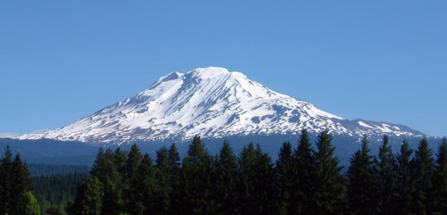
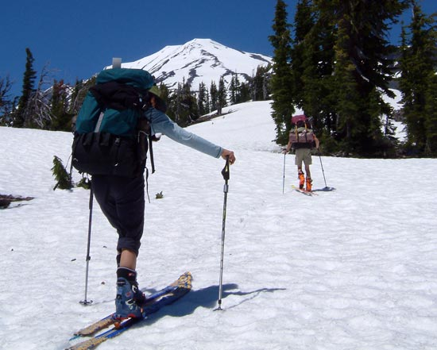
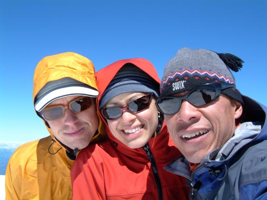
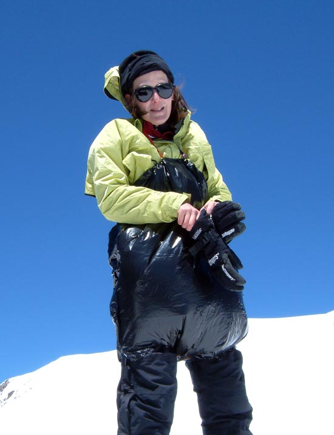
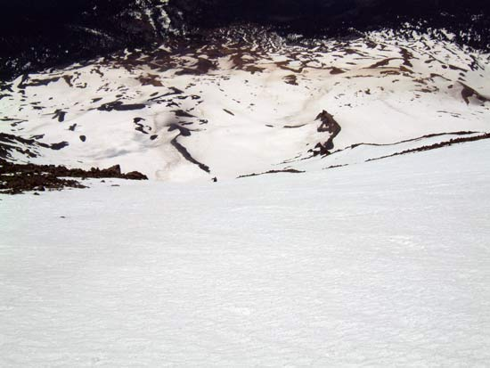
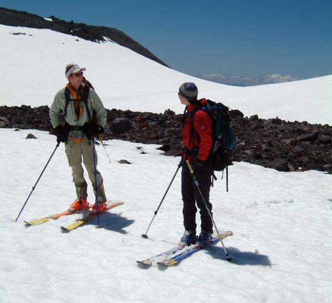

| June Photos |

| Mount Adams seen from the south, not far from the swarming sail sporting masses of Hood River. We skied the tasty, long line angling to the left. |

| Stomping little sun cups on the way up. We climbed the large snowfield on the south of the peak. |

| Foothill, Powder Princess, and the Evil Dr. Fu Manchu up on top wondering if the corn is ever going to soften in the high winds. It did. |

| One of the many custom mountain fashions sported by locals on Adams. We saw garbage bags, modified sleeping pads, and even full body rubber suits being used to facilitate flying down the mountain sitting on your ass. It looked like so much fun that I questioned why I was carting around such heavy equipment when I could have just carried a plastic bag. There's always next year to take up butt glissading... NOT! |

| This is looking down the southwest chute from about a third of the way down. That's Powder Princess mid carve in the center. |

"Well, I skied the longest line...." |
| READ MORE | CALENDAR | HOME | Photography by The Evil Doctor Fu Manchu |